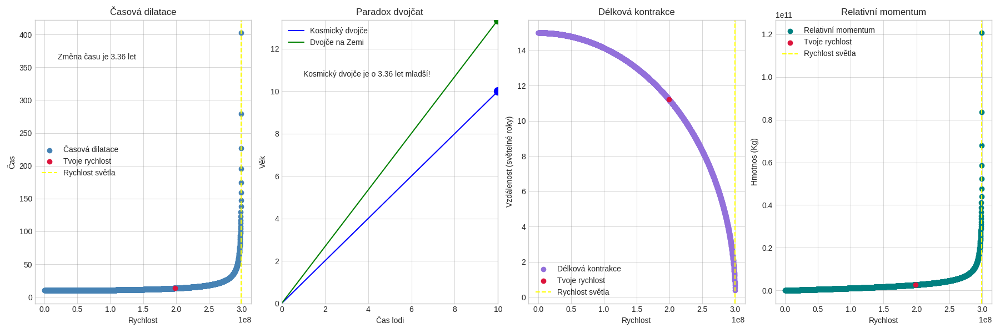

Základním parametrem výpočtů je Lorentzův faktor. Právě on propojuje měření pozorovatele v klidu s měřením soustavy pohybující se rychlostí \(v\).
O projektu
Program vznikl jako názorný způsob, jak převést vybrané důsledky speciální teorie relativity do grafů. Uživatel zadá rychlost, dobu vlastního času cestujícího, vzdálenost v klidové soustavě a hmotnost; skript následně ukáže jejich vliv na čas, délku a hybnost.
Je implementován v jazyce Python a ke kreslení používá knihovnu matplotlib. Slouží především k názornému zkoumání vztahů, nikoli jako přesný fyzikální simulátor.
Přehled grafů
Skript připraví čtyři grafy, které zachycují následující jevy:
| # | Graf | Co ukazuje |
|---|---|---|
| 1 | Dilatace času | Jak se čas zpomaluje s rostoucí rychlostí směrem ke \(c\) |
| 2 | Paradox dvojčat | Rozdíl ve stáří mezi cestovatelem a někým, kdo zůstal na Zemi |
| 3 | Kontrakce délky | Jak se vzdálenosti zkracují při relativistických rychlostech |
| 4 | Relativistická hybnost | Jak roste hybnost při přibližování k \(c\) |
Zadanou rychlost v grafech označí červený bod.
Instalace
Ověřte, že je v systému dostupný Python 3, a poté nainstalujte jedinou externí závislost:
python3 -m pip install matplotlibDalší knihovny třetích stran nejsou vyžadovány.
Stažení
Skript je k dispozici přímo v repozitáři:
Zdrojový soubor lze stáhnout také přímo z terminálu:
curl -L https://raw.githubusercontent.com/SagiHacky/Time-dilation-visualizer/main/Dilation.py -o Dilation.pySpuštění
python3 Dilation.pyProgram se postupně zeptá na dobu vlastního času cestujícího, rychlost, vzdálenost v klidové soustavě a hmotnost:
Časový interval v letech: 50
Rychlost v metrech za sekundu: 290000000
Vzdálenost ve světelných letech: 10
Hmotnost tělesa v kilogramech: 70Rychlost musí splňovat \(0 \leq v < c\), kde \(c = 299\,792\,458\,\mathrm{m/s}\). Při rychlosti světla Lorentzův faktor není konečný. Graf se otevře automaticky a uloží se jako Celé.png (nebo Celé1.png, Celé2.png… pokud soubor už existuje).
Příklad výstupu

Příklad běhu
Časový interval v letech: 50
Rychlost v metrech za sekundu: 290000000
Vzdálenost ve světelných letech: 10
Hmotnost tělesa v kilogramech: 70Následující hodnoty představují samostatné výpočty se zadanou rychlostí. Časový interval se používá pro srovnání uplynulého času; vzdálenost a hmotnost vstupují do výpočtů kontrakce délky a hybnosti.
Výsledky:
| Účinek | Výsledek |
|---|---|
| Cestovatel zestárne | 50 let |
| Na Zemi uplyne | ≈ 197,24 roku |
| Zkrácená vzdálenost | ≈ 2,53 světelného roku |
| Hybnost | \(\approx 8{,}01 \times 10^{10}\,\mathrm{kg\,m/s}\) |
Při rychlosti 290 000 000 m/s, tedy přibližně 96,7 % rychlosti světla, odpovídá 50 letům vlastního času asi 197,24 roku v klidové soustavě. Samostatně zadaná vzdálenost 10 světelných let by při této rychlosti odpovídala přibližně 2,62 roku vlastního času; nejde tedy o jediný souvislý scénář cesty.
Použité vztahy
Vztahy níže předpokládají inerciální soustavy a pohyb ve směru jedné prostorové osy. Symboly \(c\), \(v\) a \(m\) označují rychlost světla, rychlost tělesa a jeho klidovou hmotnost. \(\Delta t\) je časový interval v klidové soustavě, zatímco \(\Delta \tau\) je vlastní čas pohybujícího se tělesa.
Dilatace času
Vůči pozorovateli v klidové soustavě ubíhá vlastní čas rychle se pohybujícího cestovatele pomaleji. Skript se ptá na vlastní čas \(\Delta\tau\) a počítá odpovídající interval \(\Delta t\) v klidové soustavě. Při rychlosti odpovídající 99 % rychlosti světla připadá přibližně jeden rok na palubě na sedm let v klidové soustavě.
Kontrakce délky
Délka ve směru pohybu se zkracuje. Vzdálenost 10 světelných let v klidové soustavě proto může cestovatel při vysoké rychlosti naměřit jako výrazně kratší.
Paradox dvojčat
V úplném paradoxu dvojčat jedno z dvojčat odletí a vrátí se; po opětovném setkání bude cestující dvojče mladší, protože při obratu změní inerciální soustavu. Graf v tomto programu však zobrazuje pouze lineární srovnání uplynulých časů. Nezahrnuje obrat ani návrat, a proto nejde o úplný model paradoxu dvojčat.
Relativistická hybnost
Při nízkých rychlostech se relativistická hybnost blíží klasickému výrazu \(p = mv\). S přibližováním k rychlosti světla roste bez omezení; těleso s nenulovou klidovou hmotností proto rychlosti světla nedosáhne.
Uložený graf
Při každém spuštění se graf uloží automaticky:
- První běh →
Celé.png - Druhý běh →
Celé1.png - Třetí běh →
Celé2.png - ... a tak dál
Staré výsledky se nepřepíšou.
Použité nástroje
Licence
MIT.